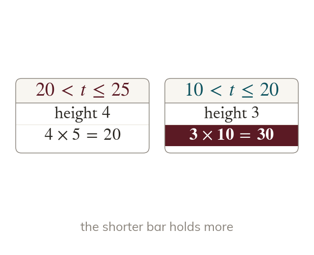
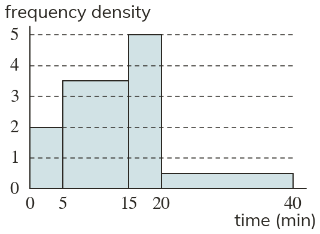
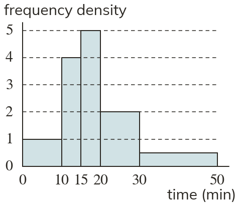
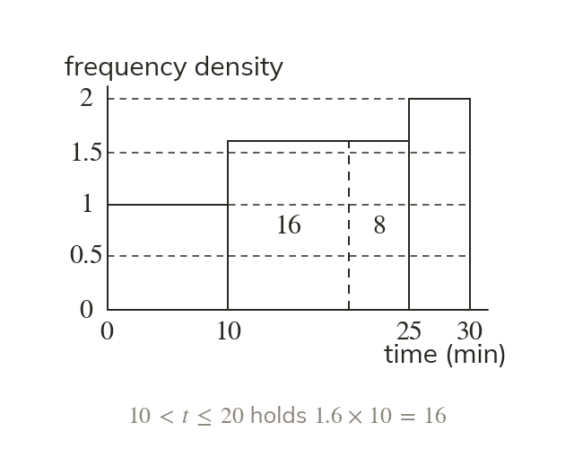
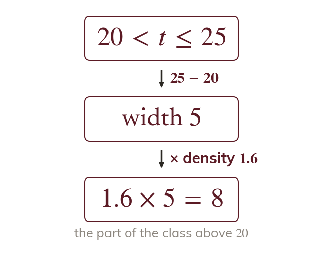

Frequency is the area
Reading a histogram reverses drawing it. Each class's frequency is its density times its width.
A histogram hides its frequencies in areas. Reading one means multiplying back, density times width, and never trusting the tallest bar at a glance.
Work down the page at your own pace. Write every answer in your book first, then click to check it.
Read each card, then follow the worked examples one step at a time.
Reading a histogram reverses drawing it. Each class's frequency is its density times its width.
The tallest bar need not hold the most values. Compare the areas instead.


Pick an answer. If it's wrong, the feedback tells you which mistake it was.
Printable worksheet — the questions with room to work.

Read each card, then follow the worked examples one step at a time.

Values in a class are taken as spread evenly. So part of a bar holds the matching part of its area.

Multiply the density by the width of the part. A bound on its own is not a width.
Pick an answer. If it's wrong, the feedback tells you which mistake it was.
Printable worksheet — the questions with room to work.
Finished? Next lesson: 10H.20.4 Averages from Histograms.
Log in, then search for a code to practise that skill.
Videos, worksheets and more on each part of this lesson.